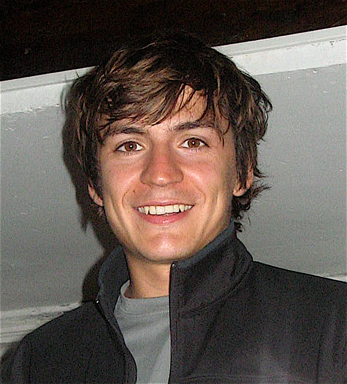

|  | Rodolphe JenattonMachine learning scientist at Amazon. |
Contact: jenatton X amazon Y com (with X=@ and Y=.)
In 2011, I finished my Ph.D which I conducted within the Sierra Team of the Département d'Informatique of École Normale Supérieure. I had the chance to be co-supervised by Francis Bach and Jean-Yves Audibert. I then spent a great year as a postdoctoral researcher with Alexandre d'Aspremont at Ecole Polytechnique. From January 2013 until May 2014, I worked for Criteo where I was in charge of improving the statistical and optimization aspects of the ad prediction engine. I am now a machine learning scientist at Amazon, Berlin.
My research interests revolve around machine learning, statistics, (convex) optimization, (structured) sparsity and their applications to image and text processing. I am also interested in dictionary learning and various unsupervised models based on latent factor representations.
Journal:
(2015) F. Fogel, R. Jenatton, F. Bach, A. d'Aspremont. Convex Relaxations for Permutation Problems. SIAM Journal on Matrix Analysis and Application, 36(4):1465-1488, 2015. [pdf]
(2015) R. Gribonval, R. Jenatton, F. Bach. Sparse and spurious: dictionary learning with noise and outliers. IEEE Transactions on Information Theory, 61(11):6298-6319. [ieee][pdf on arXiv]
(2015) R. Gribonval, R. Jenatton, F. Bach, M. Kleinsteuber and M. Seibert. Sample complexity of dictionary learning and other matrix factorizations. IEEE Transactions on Information Theory, 61(6):3469-3486. [ieee][pdf on arXiv]
(2012) R. Jenatton, A. Gramfort, V. Michel, G. Obozinski, E. Eger, F. Bach and B. Thirion. Multi-scale Mining of fMRI Data with Hierarchical Structured Sparsity. SIAM Journal on Imaging Sciences, 5(3):835-856, 2012. [pdf]
(2011) R. Jenatton*, J. Mairal*, G. Obozinski, F. Bach (*Contributed equally). Proximal Methods for Hierarchical Sparse Coding. Journal of Machine Learning Research, 12(Jul):2297-2334. [pdf]
(2011) J. Mairal*, R. Jenatton*, G. Obozinski, F. Bach (*Contributed equally). Convex and Network Flow Optimization for Structured Sparsity. Journal of Machine Learning Research, 12(Sep):2681-2720. [pdf]
(2011) R. Jenatton, J.-Y. Audibert and F. Bach. Structured Variable Selection with Sparsity-Inducing Norms. Journal of Machine Learning Research, 12(Oct):2777-2824. [pdf] [code]
Conference:
(2016) J. Huang, R. Jenatton, C. Archambeau. Online dual decomposition for performance and delivery-based distributed ad allocation. To appear at KDD. [pdf]
(2016) R. Jenatton, J. Huang, C. Archambeau. Adaptive Algorithms for Online Convex Optimization with Long-term Constraints. To appear at ICML. [pdf]
(2015) A. Freno, M. Saveski, R. Jenatton, C. Archambeau. One-Pass Ranking Models for Low-Latency Product Recommendations. SIGKDD Conference on Knowledge Discovery and Data Mining. [pdf]
(2013) F. Fogel, R. Jenatton, F. Bach, A. d'Aspremont. Convex Relaxations for Permutation Problems. Advances in Neural Information Processing Systems (NIPS). [pdf]
(2012) R. Jenatton*, N. Le Roux*, A. Bordes, G. Obozinski (*Contributed equally). A latent factor model for highly multi-relational data. Advances in Neural Information Processing Systems (NIPS). [pdf] [code]
(2010) J. Mairal*, R. Jenatton*, G. Obozinski, F. Bach (*Contributed equally). Network Flow Algorithms for Structured Sparsity. Advances in Neural Information Processing Systems (NIPS). [pdf] [code]
(2010) R. Jenatton*, J. Mairal*, G. Obozinski, F. Bach (*Contributed equally). Proximal Methods for Sparse Hierarchical Dictionary Learning. International Conference on Machine Learning (ICML). [pdf][code]
(2010) R. Jenatton, G. Obozinski, F. Bach. Structured Sparse Principal Component Analysis. International Conference on Artificial Intelligence and Statistics (AISTATS). [pdf] [code]
Book chapter:
(2012) F. Bach, R. Jenatton, J. Mairal and G. Obozinski. Structured sparsity through convex optimization. Statistical Science Volume 27, Number 4 (2012), 450-468. [Statistical Science] [pdf]
(2012) F. Bach, R. Jenatton, J. Mairal and G. Obozinski. Optimization with Sparsity-Inducing Penalties. Foundations and Trends in Machine Learning, 4(1):1-106, 2012. [FOT][pdf]
(2011) F. Bach, R. Jenatton, J. Mairal and G. Obozinski. Convex Optimization with Sparsity-Inducing Norms. In S. Sra, S. Nowozin, S. J. Wright., editors, Optimization for Machine Learning, MIT Press, 2011. [pdf]
Technical reports:
(2016) R. Jenatton, J. Huang, C. Archambeau. Online optimization and regret guarantees for non-additive long-term constraints. Technical report, arXiv:1602.05394. [pdf]
(2015) R. Jenatton, J. Huang, C. Archambeau. Adaptive Algorithms for Online Convex Optimization with Long-term Constraints. Technical report, arXiv:1512.07422. [pdf]
(2014) M. Seibert, M. Kleinsteuber, R. Gribonval, R. Jenatton and F. Bach. On The Sample Complexity of Sparse Dictionary Learning. Technical report, arXiv:1403.5112, 2014. [pdf]
(2012) R. Jenatton, R. Gribonval and F. Bach. Local stability and robustness of sparse dictionary learning in the presence of noise. Technical report, HAL 00737152. [pdf]
Selected workshops/talks:
(2015) Sparse and spurious: dictionary learning with noise and outliers. Optimization and Big Data 2015, Edinburgh. [slides]
(2011) R. Jenatton, R. Gribonval, and F. Bach. Local Analysis of Sparse Coding in the Presence of Noise. NIPS Workshop on Sparse Representation and Low-rank Approximation. [video]
(2011) J. Mairal, R. Jenatton, G. Obozinski and F. Bach. Learning Hierarchical and Topographic Dictionaries with Structured Sparsity. In proceeding of the SPIE conference on wavelets and sparsity XIV, 2011. [pdf]
(2011) R. Jenatton, A. Gramfort, V. Michel, G. Obozinski, F. Bach and B. Thirion. Multi-scale Mining of fMRI Data with Hierarchical Structured Sparsity.International Workshop on Pattern Recognition in Neuroimaging (PRNI). [ieee pdf]
(2010) G. Varoquaux, R. Jenatton, A. Gramfort, G. Obozinski, B. Thirion and F. Bach. Sparse Structured Dictionary Learning for Brain Resting-State Activity Modeling. NIPS Workshop on Practical Applications of Sparse Modeling: Open Issues and New Directions.
(2009) R. Jenatton, J.-Y. Audibert and F. Bach. Active Set Algorithm for Structured Sparsity-Inducing Norms. OPT 2009: 2nd NIPS Workshop on Optimization for Machine Learning. [pdf] [slide] [video]
Thesis:
(2011) Structured Sparsity-Inducing Norms: Statistical and Algorithmic Properties with Applications to Neuroimaging. Ph.D thesis. Ecole Normale Supérieure de Cachan. 2011. [pdf] [slides of the defense]
Winner of the best 2012 Applied Mathematics PhD thesis prize, Fondation Hadamard 2012 [more details]
Runner-up for the best 2012 Machine Learning PhD thesis, Association Française pour l’Intelligence Artificielle 2012 [more details]